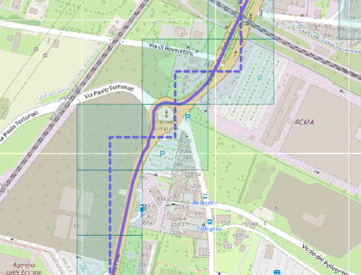

A Context-Aware System for Personal Mobility Diaries with Human Activity Recognition
Una macchina a stati decide quando "ascoltare"
Isteresi asimmetrica: una breve fermata al semaforo (<120 s) non interrompe il tragitto in corso, ma bastano 10 s di evidenza per (ri)partire.
Dall'evidenza alla finestra HAR salvata sul telefono
La FSM decide prima se l'utente è fermo o in movimento; soltanto nello stato movement vengono costruite e persistite finestre per il classificatore.
Serializzazione, compressione e checksum SHA-256 vengono eseguiti in un isolate Flutter per non bloccare l'interfaccia.
I dati grezzi non passano dal server applicativo
Una coda offline porta ogni trip fino al backend
Start riserva la timeline dell'utente; Stop crea un job locale che completa separatamente core e dati sensoriali grezzi.
Backoff fino a 5 tentativi. Se il backend sta ancora elaborando, il job attende e interroga nuovamente lo stato.
Successo: elimina file temporanei e sessione locale. Fallimento finale: elimina anche l'eventuale trip parziale remoto.
Quattro stadi asincroni, dipendenti in sequenza
L'app attende solo i primi due stadi (attività + inserimento diario) per mostrare il risultato: persistenza dei dati grezzi e scoperta dei luoghi continuano in background senza bloccare l'interfaccia.
Da 500 campioni a 6 canali a una singola etichetta
SHL (Sussex-Huawei Locomotion): 4 posizioni sul corpo, 100 Hz, finestre da 5 s. 8 classi originali fuse in 5, unendo i modi motorizzati in moving_vehicle.
Dalla FSM grezza al diario finale: due correzioni
Un gruppo di finestre con etichetta diversa che dura < 60 s tra due gruppi uguali viene riassegnato all'etichetta circostante.
Durante i 120 s di isteresi la FSM segna ancora movement, ma HAR classifica già idle: un gruppo sufficientemente lungo diventa una sosta e si fonde con quella successiva.
Da punti GPS a luoghi personalmente significativi
Due client, un gateway, due percorsi dei dati
Le richieste applicative restano sincrone; dati grezzi e analisi pesanti seguono un percorso diretto e asincrono.
Tre viste, un solo compromesso da misurare
Spatial cloaking su griglia Web Mercator: ogni coordinata è spostata al centro della sua cella.
La griglia modifica davvero la geometria del percorso
Un trip reale in auto: il percorso registrato viene confrontato con la vista approximate ottenuta usando celle da 150 metri.

Ogni punto è sostituito dal centro della propria cella; i centri consecutivi vengono collegati con segmenti retti.
La perturbazione nasconde la posizione precisa, ma introduce deviazioni nella forma e nella distanza del percorso pubblicato.
Il punto di vista dell'amministratore
- Selezione utente e visualizzazione del diario giornaliero su mappa e in timeline.
- Confronto diretto traccia reale vs traccia perturbata al livello di privacy scelto.
- Filtri per giorno, attività riconosciuta, luogo significativo o intervallo temporale.
- Statistiche aggregate sulle attività riconosciute durante il data mining della pipeline.
Dal sensore a una finestra pronta per la rete
La pipeline legge i file SHL senza caricarli interamente in memoria, costruisce i tensori e salva split e metadati riproducibili.
La CNN 1D
500 × 6
stride 1 · valid
491 × 64
245 × 64
stride 1 · valid
236 × 128
118 × 128
15.104 valori
embedding CNN
128 valori
5 probabilità · Σ = 1
Walking è la classe più equilibrata (F1 85,1%). Running raggiunge una precisione del 98,7%, ma un recall del 56,5%: quando viene riconosciuta è quasi sempre corretta, ma diverse finestre di corsa vengono perse.
La GRU aggiunge il contesto temporale
La CNN descrive ogni finestra; la Bidirectional GRU descrive quella finestra dentro la sequenza.
Alla posizione 3, E3 alimenta entrambe le catene: h→3 riassume E1…E3, h←3 riassume E64…E3. La concatenazione produce H3: 64 + 64 = 128 valori.
Come ho addestrato la GRU
64 sequenze/batch × 64 finestre = 4.096 predizioni. La loss viene calcolata su ciascuna e poi mediata.
Più peso alle classi rare e alle finestre difficili; meno agli esempi già classificati con sicurezza.
Simmetrico non significa necessariamente utile: una sequenza può contenere cambi di attività. La GRU impara quali parti del contesto conservare.
Accuratezza e confusione tra classi
Accuracy sul validation set al variare della lunghezza di sequenza (stessi pesi GRU)
L = 128 scelto in produzione: guadagno marginale oltre questo punto, a fronte di una latenza 4-5× maggiore.
Matrice di confusione, quota per riga (classe vera)
| Idle | Walk | Run | Bike | Vehicle | |
|---|---|---|---|---|---|
| Idle | .855 | .015 | .000 | .004 | .126 |
| Walk | .030 | .946 | .000 | .004 | .020 |
| Run | .000 | .150 | .754 | .096 | .000 |
| Bike | .031 | .268 | .000 | .414 | .286 |
| Vehicle | .108 | .005 | .000 | .000 | .887 |
Confusione dominante: Idle ↔ Vehicle — un veicolo fermo nel traffico e una persona ferma producono un segnale inerziale quasi identico in una singola finestra.
La stessa accuracy nasconde classi molto diverse
Valutazione del modello deployed su 115.156 finestre del validation set ufficiale.
Biking è il punto debole: quando la rete predice bici è spesso corretta (precision .906), ma riconosce soltanto il 41.4% delle finestre realmente biking.
Running ha precision quasi perfetta, ma un supporto molto ridotto: solo 2.220 finestre.
Più contesto costa tempo, soprattutto sulle richieste piccole
Latenza di inferenza del classificatore con gli stessi pesi e sequence length differenti.
Su 100 finestre, passare da L=128 a L=512 aumenta la latenza da 130.9 a 605.1 ms (4.6×), per appena +1.5 punti di accuracy.
La misura riguarda la sola inferenza CNN+GRU; rete, upload e persistenza sono esclusi.
In background il sistema degrada senza inventare dati
Il GPS può continuare, mentre i sensori inerziali non sono garantiti: app e backend applicano salvaguardie diverse.
Se la FSM ha prodotto un macro-segmento MOVE ma non esistono finestre HAR, il diario non resta senza etichetta: usa la mediana della velocità GPS.
È un fallback: interviene soltanto quando il telefono non ha fornito dati sufficienti al modello HAR.
Il cloaking più largo protegge di più, ma non peggiora tutto allo stesso modo
Privacy Perturbation media (m), per modalità
Errore di distanza relativo (QoS), per modalità
*Cycling: campione limitato (n = 3), incluso solo per completezza.
Il diario appare in pochi secondi, la persistenza grezza no
Load test: 25 utenti concorrenti, 10 trip di ~1 ora ciascuno.
| Stadio | Media (s) | Max (s) |
|---|---|---|
| Core (GPS + transizioni) | 2.02 | 15.83 |
| Raw upload (client) | 3.04 | 28.59 |
| HAR + diario | 4.62 | 11.06 |
| Raw batch insertion | 29.68 | 53.97 |
| Place mining | 0.97 | 2.74 |
Il diario è pronto dopo core + HAR + diario (≈ pochi secondi). L'inserimento massivo dei campioni grezzi in RawSensorReading resta il collo di bottiglia, ma è invisibile all'utente perché prosegue in background.
Cosa manca, e dove andrebbe il progetto dopo
Limiti attuali
- Il rilevamento del movimento è un'euristica ad hoc su accelerometro e GPS, non le API native di activity recognition del sistema operativo.
- moving_vehicle non distingue auto, bus o treno: le firme inerziali dei mezzi motorizzati sono troppo simili tra loro.
- I dati grezzi caricati restano indefinitamente nell'object storage se il trip non viene mai eliminato esplicitamente.
Sviluppi futuri
- Cancellazione periodica dei dati sensoriali grezzi dall'object storage a elaborazione completata.
- Meccanismo con cui l'utente corregge un'etichetta HAR errata, per raccogliere feedback e aggiornare il modello.
Grazie per l'attenzione — domande?